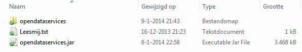

<!DOCTYPE HTML PUBLIC "-//W3C//DTD HTML 4.0 Transitional//EN">
<HTML>
<HEAD>
	<META HTTP-EQUIV="CONTENT-TYPE" CONTENT="text/html; charset=utf-8">
	<TITLE>BAG import Nederland</TITLE>
	<META NAME="GENERATOR" CONTENT="LibreOffice 4.1.3.2 (Linux)">
	<META NAME="AUTHOR" CONTENT="JR">
	<META NAME="CREATED" CONTENT="20140113;205700000000000">
	<META NAME="CHANGEDBY" CONTENT="Wolf-van-der, Harry">
	<META NAME="CHANGED" CONTENT="20140115;72900000000000">
	<META NAME="AppVersion" CONTENT="14.0000">
	<META NAME="DSMClassification" CONTENT="PUBLIC">
	<META NAME="DocSecurity" CONTENT="0">
	<META NAME="HyperlinksChanged" CONTENT="false">
	<META NAME="LinksUpToDate" CONTENT="false">
	<META NAME="ScaleCrop" CONTENT="false">
	<META NAME="ShareDoc" CONTENT="false">
	<META NAME="TitusGUID" CONTENT="2ffc7647-af94-43f7-8d57-774f82f35db0">
	<STYLE TYPE="text/css">
	<!--
		@page { margin-left: 2.5cm; margin-right: 2.5cm; margin-top: 0.75cm; margin-bottom: 0.5cm }
		body, th, td, p { margin-bottom: 0.21cm; direction: ltr; widows: 2; orphans: 2; font-family: Arial, Helvetica, sans-serif; }
		A:link { color: #0000ff; so-language: zxx }
		A.sdfootnoteanc { font-size: 75% }
	-->
	</STYLE>
</HEAD>
<BODY LANG="nl-NL" LINK="#0000ff" DIR="LTR">
<P><A NAME="_GoBack"></A>
<H1>OpenStreetMap - BAG import Nederland</B> (versie 0.41 13-1-2014)</H1>
<P><FONT COLOR="#ff0000"><B>VOER EEN BAG IMPORT ALLEEN UIT ALS JE ERVARING HEBT MET JOSM. Werk bij je
eerste BAG import met een klein gebied (maximaal 1000 huizen).</B></FONT></P>
<H2>STAP 0. Eenmalige voorbewerking</H2>
<OL TYPE=a>
	<LI>(Verplicht)
	Maak een speciaal useraccount aan bestaande uit &lt;je username
	_BAG&gt;. (Optioneel) gebruik hetzelfde password als je gewone
	useraccount.</P></LI>
	<LI>Stel de validator in om duplicated nodes (gedupliceerde knopen), crossing ways (kruisende wegen) en duplicated ways (gedupliceerde wegen) op te sporen.(edit -&gt; preferences -&gt; validator).</P></LI>
	<LI>Activeer de poly plugin en de utilsplugin2.</P></LI>
	<LI>Installeer de ODS plugin:
	<UL>
	<LI>Selecteer de inhoud van …\BAG\BAG\<B>bag-plugin-0.4.3</B>
	</BR></LI>
	<LI>Kopieer deze naar 
	<UL>
	<LI>Windows: C:\Users\USERNAME\AppData\Roaming\JOSM\plugins</LI>
	<LI>Linux: /home/USERNAME/.josm/plugins</LI>
	<LI>Mac OS X: /Users/USERNAME/.josm/plugins</LI>
	</UL>
	</LI>
	<LI>Start JOSM en activeer de plugin, zoek in Preferences -> Plugins naar <B>opendataservices.jar</B>,
	vink deze aan en klik OK.</LI></UL>
	</P></LI>
	<LI><P>Maak in JOSM de volgende filters aan:
	<OL>
	<LI>(building=yes tags:1) OR (building=yes source=* tags:2) OR (building=yes
	&quot;3dshapes:ggmodelk&quot; source tags:3) OR (building=yes type
	tags:2) OR (building=yes source type tags:3)</LI>
	<LI>(&quot;addr:interpolation&quot;
	OR &quot;addr:street&quot; OR &quot;addr:housenumber&quot;)
	-bag:conversie -(amenity OR leisure OR shop OR office OR tourism OR
	name) -source:BAG</LI>
	<LI>bag=conversie</LI>
	<LI>("addr:interpolation" OR "addr:street" OR "addr:housenumber") -bag:conversie -(amenity OR leisure OR shop OR office OR tourism OR name) -source:BAG</LI></OL>
	<B>Notabene: </b> Filters 1 en 2 moeten op basis van "Replace selection" ingesteld worden.</P></LI>

	<LI>Installatie osmconvert en script.
	<UL><LI>Maak een map ‘BAG-split’ aan</LI>
	<LI><B>Windows:</B>
	<UL><LI>Kopieer het programma osmconvert.exe<A CLASS="sdfootnoteanc" NAME="sdfootnote1anc" HREF="#sdfootnote1sym"><SUP>1</SUP></A> in deze map</LI>
	<LI>Kopieer de onderstaande tekst in een tekstfile en sla deze op met de naam split_osm_ods_bag.bat of split_osm_ods_bag.cmd (Notabene: let op dat Windows er geen .txt achter plaatst)
	<BLOCKQUOTE>@ECHO OFF<BR>
<BR>
if "%~1"=="" Goto Error<BR>
<BR>
ECHO converteren van "OSM_BAG.osm" naar "OSM_BAG_poly.osm".<BR>
osmconvert OSM_BAG.osm -B=%1 --complete-ways --complex-ways -o=OSM_BAG_poly.osm<BR>
<BR>
ECHO converteren van "ODS_BAG.osm" naar "ODS_BAG_poly.osm".<BR>
osmconvert ODS_BAG.osm -B=%1 --complete-ways --complex-ways -o=ODS_BAG_poly.osm<BR>
ECHO Klaar<BR>
goto Exit<BR>
<BR>
:Error<BR>
ECHO.<BR>
ECHO Je hebt geen poly naam opgegeven<BR>
ECHO Correct gebruik: "split_osm_ods_bag.cmd <naam>.poly"<BR>
ECHO.<BR>
Goto Exit<BR>
<BR>
:Exit</BLOCKQUOTE></LI></UL>
	<LI><B>Linux en Mac OS X</B>
	<UL><LI>Kopieer het programma osmconvert<A CLASS="sdfootnoteanc" NAME="sdfootnote1anc" HREF="#sdfootnote1sym"><SUP>1</SUP></A> in deze map</LI>
	<LI>Kopieer de onderstaande tekst in een tekstfile en sla deze op met de naam split_osm_ods_bag.sh</LI>
	<LI>Maak het bestand uitvoerbaar.
	<BLOCKQUOTE>#!/bin/bash<BR>
if [ $# -lt 1 ]<BR>
  then<BR>
    echo ""<BR>
    echo " Je hebt geen poly naam opgegeven"<BR>
    echo ' Correct gebruik: "./split_osm_ods_bag.sh <naam>.poly"'<BR>
    echo " dit gaat er van uit dat je osmconvert in je PATH hebt staan."<BR>
    echo ""<BR>
    exit<BR>
fi<BR>
<BR>
echo 'converteren van "OSM_BAG.osm" naar "OSM_BAG_poly.osm".'<BR>
./osmconvert OSM_BAG.osm -B="$1" --complete-ways --complex-ways -o=OSM_BAG_poly.osm<BR>
echo 'converteren van "ODS_BAG.osm" naar "ODS_BAG_poly.osm".'<BR>
./osmconvert ODS_BAG.osm -B="$1" --complete-ways --complex-ways -o=ODS_BAG_poly.osm<BR>
echo 'Klaar'</BLOCKQUOTE><BR>
Notabene: Als je osmconvert in je PATH hebt staan hoef je uiteraard osmconvert niet in de folder te kopieren
en ook niet de "./" voor osmconvert in het script te zetten.</LI>
	</UL></LI>
	<LI><P>Maak een tekstbestand aan dat je opslaat met de extensie *.bat (Windows) en met de extensie *.sh (Linux/Mac OS X) met de volgende opdrachtregel: ‘java –Xmx6000M -jar josm-tested.jar’.
	Het op deze wijze starten van JOSM (latest) voorkomt geheugenproblemen.</LI>
</OL>
<H2>STAP 1. Contact opnemen met mappers die al adressen hebben toegevoegd</H2>
<P>Neem
contact op met mappers die grote aantallen adressen (meer dan
honderd) hebben ingevoerd in de woonplaats die je wilt importeren.
Maak duidelijk dat je van plan bent een import te doen van adressen
en gebouwen, waarbij zij of mee kunnen helpen of kunnen aangeven wat
ze willen doen met de door hen ingevoerde adressen. Het is binnen OSM
normaal om een reactietijd van maximaal een week te geven.<BR>Een hulpmiddel om
andere mappers te vinden zijn de site <a href="http://resultmaps.neis-one.org/oooc?zoom=8&lat=52.39708&lon=5.9064&layers=00BFTFFFFT" target="_blank">Who is around me?</a> en de site <a href="http://www.itoworld.com/map/130?lon=5.28510&lat=52.40372&zoom=8&fullscreen=true&fullscreen=true" target="_blank">ITO map - recent edits</a> (Gebruik de Layers button om te wisselen tussen periodes en fixups/edits)</P>
<H2>STAP 2. BAG panden en adressen voorzien van relevante bestaande data</H2>
<OL TYPE=A>
	<LI>Om te voorkomen dat je hele stukken van de BAG niet importeert, is het
	meest handige om een importstrategie te bedenken per
	woonplaats
	op basis van de woonplaatsgrenzen, watergangen, doorgaande wegen en
	spoorlijnen. In deze stap worden daarvoor zogenoemde polygonen
	gebruikt. Woonplaatsen moet je daarvoor opknippen in stukken (van
	bijvoorbeeld maximaal 5000 gebouwen<A CLASS="sdfootnoteanc" NAME="sdfootnote2anc" HREF="#sdfootnote2sym"><SUP>2</SUP></A>).
	Omdat ODS obv de OSM api alleen vierkanten kan downloaden laad je
	eerst een gebied in dat groter is dan het te importeren gebied. In
	een volgende stap wordt de overtollige download (BAG data buiten het
	te importeren gebied) automatisch op basis van de polygon
	verwijderd. </FONT>
	</P>
	<LI>Download
	het gebied waar je de BAG data wilt importeren in JOSM via de
	menuoptie ODS<A CLASS="sdfootnoteanc" NAME="sdfootnote3anc" HREF="#sdfootnote3sym"><SUP>3</SUP></A>.
	Zorg ervoor dat je per keer niet te grote stukken selecteert<A CLASS="sdfootnoteanc" NAME="sdfootnote4anc" HREF="#sdfootnote4sym"><SUP>4</SUP></A>
	en dat alle panden en adressen binnen het gebied dat je wilt
	bewerken van je polygon zijn ingeladen (zorg voor overlap).  </FONT>
	</P>
	<OL TYPE=1>
		<LI>Selecteer de laag waarin je het duidelijkst de grenzen van je bewerkingsgebied ziet.
		</LI>
		<LI>Trek een gesloten lijn (polygon) rond dit gebied. Je lijn mag geen
		gebouwen doorsnijden en je mag geen tag toevoegen aan deze lijn.</LI>
		<LI>Copieer
		de geselecteerde polygon met Ctlr-C (Mac OS X: Command-C).
		<LI>Verwijder de geselecteerde lijn uit deze laag met Del.
		<LI>Open
		een nieuwe laag: FILE -&gt; NEW LAYER (of Ctrl-N; Mac OS X Command-N). Plak de polygon met Ctrl-V (Mac OS X: Command-V). Sla de polygon op (rechts-klik op deze laag in het venster Layers, save as...) in het *.poly formaat met
		[woonplaatsnaam_volgnummer] in de map BAG-split.<BR>
		(Open zonodig polygonen die je al eerder had aangemaakt in je
		woonplaatswerkgebied<A CLASS="sdfootnoteanc" NAME="sdfootnote5anc" HREF="#sdfootnote5sym"><SUP>5</SUP></A>.)<BR>
		<FONT COLOR="#ff0000">Je mag deze polygonen nooit uploaden naar de OSM server!!.</FONT></LI>
		<LI>Sla
		de laag ODS BAG op als OSM file<A CLASS="sdfootnoteanc" NAME="sdfootnote6anc" HREF="#sdfootnote6sym"><SUP>6</SUP></A>
		met de naam ODS_BAG in de map BAG-split. Sla de laag OSM BAG op als
		OSM file met de naam OSM_BAG in de map BAG-split.</p></LI>
	</OL>
	<LI>Sluit alle lagen in JOSM<A CLASS="sdfootnoteanc" NAME="sdfootnote7anc" HREF="#sdfootnote7sym"><SUP>7</SUP></A>.</FONT></P>
	<LI>Gebruik OSMconvert om op basis van de polygon (let op dat je de actuele naam
	met het juiste volgnummer gebruikt in je bat files<A CLASS="sdfootnoteanc" NAME="sdfootnote8anc" HREF="#sdfootnote8sym"><SUP>8</SUP></A>)
	een uitsnede te maken van het ODS BAG bestand en het OSM BAG
	bestand.</FONT></P>
	<LI>Open de uitgesneden lagen OSM_BAG_poly.osm en ODS_BAG_poly.osm in JOSM.
	<UL><LI>Zet het groene oogje/vinkje voor de laag ODS_BAG_poly.osm
	<LI>Draai de validator op de laag ODS_BAG_poly.osm
	<LI>los alle volgende foutmeldingen op:
	crossing buildings, duplicated nodes, duplicated ways en ways with
	same position. Verwijder duplicated nodes en ways automatisch. Bij
	crossing buildings kun je het beste een node aanmaken en mergen (M).
	Voeg bij ondergrondse parkeergarages de tag layer=-1 toe. De
	foutmelding ‘Nodes at same position’ hou je als enige over en moet
	je negeren.
	Deze foutmelding betekent namelijk dat een gemeente adressen van
	meerdere verdiepingen, en dus verschillende adressen, op exact
	dezelfde LAT/LON positie in de BAG heeft toegevoegd.</P></UL></LI>
	<LI>Activeer
	de laag OSM_BAG_poly.osm (het groene oogje/vinkje moet voor deze laag
	staan)
	<UL><LI><I>Voeg
	een tijdelijke tag bag:conversie toe aan alle panden die te behouden
	data bevatten.</I><BR>
	<UL><LI>Activeer het filter: (building=yes tags:1) OR (building=yes
	source=* tags:2) OR (building=yes &quot;3dshapes:ggmodelk&quot;
	source tags:3) OR (building=yes type tags:2) OR (building=yes source
	type tags:3) (<b> niet geinverteerd</b>)
	<LI>Selecteer met de muis alle objecten.
	<LI>Zoek (Ctrl-F) met ‘building -source:BAG’ optie ‘find in selection’ 
	naar de gebouwen met te behouden data. Voeg
	daaraan een tag bag met de waarde conversie (bag:conversie) toe.
	Check handmatig industriële complexen en volkstuinen en voeg daar
	zonodig de tag bag=conversie toe<A CLASS="sdfootnoteanc" NAME="sdfootnote9anc" HREF="#sdfootnote9sym"><SUP>9</SUP></A>
	</UL></LI>

	</P>
	<LI><I>Verwijder de 3dshapes panden die geen informatie bevatten</I>
	<UL><LI>Activeer hetzelfde
	JOSM filter: building=yes tags:1) OR (building=yes source=* tags:2)
	OR (building=yes &quot;3dshapes:ggmodelk&quot; source tags:3) OR
	(building=yes type tags:2) OR (building=yes source type tags:3)
	 maar nu <I>geïnverteerd</I>
	<LI>Selecteer vervolgens met je muis alle gebouwen. 
	<LI>Zoek via CRTL-F op building met optie ‘find in selection’zoeken om te voorkomen dat nodes
	(POI’s!) die op de rand van gebouwen zitten mee verwijderd worden.
	<LI>Check in de tag lijst (dialoogvenster Tags / Memberships) dat
	hooguit de drie tags building, 3dshapes:ggmodelk en source in de
	selectie zijn opgenomen. Soms kom je een multipolygoon tegen,
	verwijder deze dan eerst handmatig om te voorkomen dat er in de
	database een lege relatie overblijft. 
	<LI>Verwijder de resterende
	selectie in het gebied dat je vervangt. Het filter verwijdert niet
	alle te verwijderen multipolygonen, check met het filter: building
	type=multipolygon of  er nog andere te verwijdeen panden met
	mutlipolygonen zijn.</P></UL></LI>
	<LI><i>Verwijder bestaande niet-BAG adressen</I>
	<UL><LI>Activeer het <I>geïnverteerde</I>
	filter (&quot;addr:interpolation&quot; OR &quot;addr:street&quot; OR
	&quot;addr:housenumber&quot;) -bag:conversie -(amenity OR leisure OR
	shop OR office OR tourism OR name) -source:BAG. 
	<LI>Check handmatig de resterende selectie en unglue POI’s die op de lijn
	interpolation zitten door eerst in te zoomen en dan de shortcut G te
	gebruiken. Voeg bij te behouden adressen de tag bag:conversie toe.
	<LI>Selecteer alle adressen met je muis.
	<LI>Check in de tag lijst (dialoogvenster Tags / Memberships) dat deze
	uitsluitend de tag addr: hebben. Als je een andere tag ziet, dan
	eerst oplossen door bijvoorbeeld te ungluen. Verwijder alle
	geselecteerde adressen in het gebied dat je vervangt.
	</P></UL></LI>
	</UL></LI>
	<LI>Merge
	de laag ODS_BAG_poly.osm naar OSM_BAG_poly.osm<A CLASS="sdfootnoteanc" NAME="sdfootnote10anc" HREF="#sdfootnote10sym"><SUP>10</SUP></A>
	</P>
	<LI><I>Verwijderen/Samenvoegen dubbele panden</I>
	<UL><LI>Activeer het filter bag:conversie</LI>
	<LI>Merge dubbele panden met het merge gereedschap CRTL-SHIFT-G.
	<LI>Verwijder de tag bag:conversie als je de merge hebt doorgevoerd.  Bij één POI/één
	gebouw mag je eventueel alle tags inclusief het  adres op de outline
	zetten (CTRL-SHIFT-G), maar voeg dan de tag entrance=main toe bij de
	ingang<A CLASS="sdfootnoteanc" NAME="sdfootnote11anc" HREF="#sdfootnote11sym"><SUP>11</SUP></A>.
	Je mag er van uitgaan dat de BAG panden beter zijn gepositioneerd
	dan de Bing beelden, verschuif dus niet zomaar de BAG panden.
	<LI>Herhaal dit zo vaak als nodig is.</P></UL></LI>
	<LI>Draai de validator en los alle duplicated nodes en alle duplicated ways
	op. Check ook de crossing buildings<A CLASS="sdfootnoteanc" NAME="sdfootnote12anc" HREF="#sdfootnote12sym"><SUP>12</SUP></A>
	en crossing ways problemen (bijvoorbeeld achterpaden die door panden
	lopen).  De foutmelding ‘Nodes at same position’ moet je negeren
	(zie toelichting bij stap 2e). Als je ergens twijfelt, voeg dan een
	fixme toe. 
	</P>
</OL>
<P STYLE="margin-left: 0.75cm; margin-bottom: 0.35cm"><BR><BR>
</P>
<H2>STAP 3 Upload naar OSM server</H2>
<P>Upload de data naar de OSM server met je _BAG useraccount. Gebruik een chunk
size van 100 en als omschrijving Import BAG [gebied] en als source
BAG [sourcedate<A CLASS="sdfootnoteanc" NAME="sdfootnote13anc" HREF="#sdfootnote13sym"><SUP>13</SUP></A>].
 Klik op OK als je de melding ‘failed to open a connection to the
remote server’ krijgt tijdens het uploaden. Als je een foutmelding
krijgt over synchronisatie die niet met de door JOSM aangereikte
methode is  op te lossen, gebruik dan niet ‘cancel’ maar ‘upload
each object individually’. Bij eventuele conflicten kun je in
noodgevallen FILE -&gt; Update selection toepassen. Het is normaal
als de upload lang duurt, soms is het erg druk op de OSM server. 
</FONT><FONT COLOR="#ff0000">Mocht
een upload fout gaan, draai de afgebroken upload dan zo snel mogelijk
terug (doe dit nooit handmatig, maar altijd met de reverter van
JOSM).</FONT></P>
<P><FONT COLOR="#808080">Je kunt nu een volgend gebied in de woonplaats importeren (begin vanaf
stap 2a)</FONT></P>
<H2>STAP 4 Nabewerking</H2>
<P>Na circa twee dagen is de <a href="http://tools.geofabrik.de/osmi/?view=addresses&lon=5.61383&lat=52.34642&zoom=8" target="_blank">OSM inspector</a> van Geofabrik bijgewerkt.
Verbeter dan met de adresweergave van OSM inspector (nodes with
addresses -&gt; street not found) de mismatches tussen adressen en
straten. In principe is de BAG naam juist. In OSM worden straatnamen
echter vaak voluit geschreven. Volg in die gevallen de OSM notitie en
verander dus de adresnodes. Bijvoorbeeld: Dr. = Doctor en Burg. =
Burgemeester. Je kunt hierbij het NWB gebruiken, via
<A HREF="http://pdokviewer.pdok.nl/">http://pdokviewer.pdok.nl/</A></FONT></P>
<P><BR><BR>
</P>
<DIV ID="sdfootnote1">
	<P STYLE="margin-bottom: 0cm; line-height: 100%; page-break-before: always">
	<FONT SIZE=2><A CLASS="sdfootnotesym" NAME="sdfootnote1sym" HREF="#sdfootnote1anc">1</A><SUP></SUP>
	<FONT FACE="Arial, sans-serif" SIZE=1>http://wiki.openstreetmap.org/wiki/Osmconvert#Download</FONT></P>
</DIV>
<DIV ID="sdfootnote2">
	<P STYLE="margin-bottom: 0cm; line-height: 100%; page-break-before: always">
	<FONT SIZE=2><A CLASS="sdfootnotesym" NAME="sdfootnote2sym" HREF="#sdfootnote2anc">2</A><SUP><FONT FACE="Arial, sans-serif" SIZE=1></FONT></SUP><FONT FACE="Arial, sans-serif" SIZE=1>
	Bij een te groot aantal gebouwen/adressen neemt de uploadtijd
	onevenredig toe </FONT>
	</P>
</DIV>
<DIV ID="sdfootnote3">
	<P STYLE="margin-bottom: 0cm; line-height: 100%; page-break-before: always">
	<FONT SIZE=2><A CLASS="sdfootnotesym" NAME="sdfootnote3sym" HREF="#sdfootnote3anc">3</A><SUP><FONT FACE="Arial, sans-serif" SIZE=1></FONT></SUP><FONT FACE="Arial, sans-serif" SIZE=1>
	Incidenteel kan het druk zijn op de WFS server. Dat merk je als het
	downloaden heel lang duurt en/of foutmeldingen geeft. Een oplossing
	is om het een dag later nogmaals te proberen.</FONT></P>
</DIV>
<DIV ID="sdfootnote4">
	<P STYLE="margin-bottom: 0cm; line-height: 100%; page-break-before: always">
	<FONT SIZE=2><A CLASS="sdfootnotesym" NAME="sdfootnote4sym" HREF="#sdfootnote4anc">4</A><SUP><FONT FACE="Arial, sans-serif" SIZE=1></FONT></SUP><FONT FACE="Arial, sans-serif" SIZE=1>
	De BAG WFS kan maximaal 15.000 objecten aan. Bij een te groot gebied
	zullen gebouwen en adressen ontbreken. Hou in stedelijk gebied een
	maximale omvang van één bij één vierkante kilometer aan per
	download. Uiteraard kun je dit herhalen totdat het gewenste gebied
	geheel is gedownload.</FONT></P>
</DIV>
<DIV ID="sdfootnote5">
	<P STYLE="margin-bottom: 0cm; line-height: 100%; page-break-before: always">
	<FONT SIZE=2><A CLASS="sdfootnotesym" NAME="sdfootnote5sym" HREF="#sdfootnote5anc">5</A><SUP><FONT FACE="Arial, sans-serif" SIZE=1></FONT></SUP><FONT FACE="Arial, sans-serif" SIZE=1>
	Je kunt er voor kiezen om te werken met één bestand waarin je al
	je polygonen opneemt. Bij het opslaan van de polygoon van één
	gebied moet je uiteraard alle andere polygonen verwijderen.</FONT></P>
</DIV>
<DIV ID="sdfootnote6">
	<P STYLE="margin-bottom: 0cm; line-height: 100%; page-break-before: always">
	<FONT SIZE=2><A CLASS="sdfootnotesym" NAME="sdfootnote6sym" HREF="#sdfootnote6anc">6</A><SUP><FONT FACE="Arial, sans-serif" SIZE=1></FONT></SUP><FONT FACE="Arial, sans-serif" SIZE=1>
	Als je niet bezig bent met de import van een woonplaats, maar
	bijvoorbeeld met het bijwerken van enkele gebouwen, dan hoef je de
	tussenstap met de polygonen niet te doen. Bij de woonplaatsimport is
	dat wel van belang, omdat de OSM API alleen een download in
	vierkanten toestaat wat het heel lastig maakt om zeker te weten dat
	je alle gebouwen en adressen van een woonoplaats goed importeert. De
	tussenstap met polygonen is veel veiliger.</FONT></P>
</DIV>
<DIV ID="sdfootnote7">
	<P STYLE="margin-bottom: 0cm; line-height: 100%; page-break-before: always">
	<FONT SIZE=2><A CLASS="sdfootnotesym" NAME="sdfootnote7sym" HREF="#sdfootnote7anc">7</A><SUP><FONT FACE="Arial, sans-serif" SIZE=1></FONT></SUP><FONT FACE="Arial, sans-serif" SIZE=1>
	ODS BAG en OSM BAG zijn gekoppeld: beide sluiten als je een van deze
	lagen sluit</FONT></P>
</DIV>
<DIV ID="sdfootnote8">
	<P STYLE="margin-bottom: 0cm; line-height: 100%; page-break-before: always">
	<FONT SIZE=2><A CLASS="sdfootnotesym" NAME="sdfootnote8sym" HREF="#sdfootnote8anc">8</A><SUP><FONT FACE="Arial, sans-serif" SIZE=1></FONT></SUP><FONT FACE="Arial, sans-serif" SIZE=1>
	Gebruik geen spaties in *.bat files</FONT></P>
</DIV>
<DIV ID="sdfootnote9">
	<P STYLE="margin-bottom: 0cm; line-height: 100%; page-break-before: always">
	<FONT SIZE=2><A CLASS="sdfootnotesym" NAME="sdfootnote9sym" HREF="#sdfootnote9anc">9</A><SUP><FONT FACE="Arial, sans-serif" SIZE=1></FONT></SUP><FONT FACE="Arial, sans-serif" SIZE=1>
	De BAG bevat over industriële complexen en volkstuinen minder info
	dan 3Dshapes. Voeg bji opslagtanks de tag man_made=storage_tank toe</FONT></P>
</DIV>
<DIV ID="sdfootnote10">
	<P STYLE="margin-bottom: 0cm; line-height: 100%; page-break-before: always">
	<FONT SIZE=2><A CLASS="sdfootnotesym" NAME="sdfootnote10sym" HREF="#sdfootnote10anc">10</A><SUP><FONT FACE="Arial, sans-serif" SIZE=1></FONT></SUP><FONT FACE="Arial, sans-serif" SIZE=1>
	Als je een enkel adres of pand wilt toevoegen: vanuit de plugin kan
	mergen alleen met selecteren van objecten en CTRL-SHIFT-M</FONT></P>
</DIV>
<DIV ID="sdfootnote11">
	<P STYLE="margin-bottom: 0cm; line-height: 100%; page-break-before: always">
	<FONT SIZE=2><A CLASS="sdfootnotesym" NAME="sdfootnote11sym" HREF="#sdfootnote11anc">11</A><SUP><FONT FACE="Arial, sans-serif" SIZE=1></FONT></SUP><FONT FACE="Arial, sans-serif" SIZE=1>
	Als j e de ingang niet zeker weet kun je een fixme=entrance op de
	pandcontour zetten</FONT></P>
</DIV>
<DIV ID="sdfootnote12">
	<P STYLE="margin-bottom: 0cm; line-height: 100%; page-break-before: always">
	<FONT SIZE=2><A CLASS="sdfootnotesym" NAME="sdfootnote12sym" HREF="#sdfootnote12anc">12</A><SUP><FONT FACE="Arial, sans-serif" SIZE=1></FONT></SUP><FONT FACE="Arial, sans-serif" SIZE=1>
	Soms heb je een pad dat onder een gebouw doorloopt. Dat gedeelte van
	het pad moet je dan taggen met covered=yes. Dat is niet voldoende om
	de foutmelding in validator op te lossen: eventueel kun je het
	gebouw splitsen, waarbij je het gedeelte waar het pad onderdoor
	loopt layer=1 geeft.</FONT></P>
</DIV>
<DIV ID="sdfootnote13">
	<P STYLE="margin-bottom: 0cm; line-height: 100%; page-break-before: always">
	<FONT SIZE=2><A CLASS="sdfootnotesym" NAME="sdfootnote13sym" HREF="#sdfootnote13anc">13</A><SUP><FONT FACE="Arial, sans-serif" SIZE=1></FONT></SUP><FONT FACE="Arial, sans-serif" SIZE=1>
	YYYY-MM-DD</FONT></P>
</DIV>
</BODY>
</HTML>
